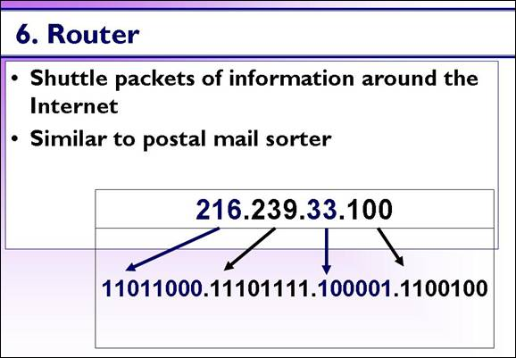
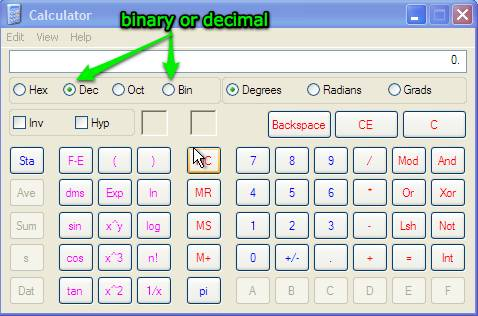

Routers

[D]Your request, converted into ones and zeros, has gone from your browser, to the DNS lookup, to your ISP, and is now wandering around the Internet.
The routers on the Internet use the IP address to determine where the request packet should be sent. This is much like a postal worker uses zip codes to determine where a letter should be sent.
Keep in mind that the IP address is all ones and zeros. To the network, the IP address we use 216.239.33.100 looks like this 11011000.11101111.100001.1100100. (The dots are there for you, only the ones and zeros exist on the network.)
You can see this yourself if you use a calculator and translate each IP number into binary.
In Windows open up the calculator: Start/run/ type in: calc
Using the menu items change the view to Scientific: view/scientific
Choose the appropriate radio button to input binary, than switch to decimal

Here is a video showing this in action:
Using Calc in Windows